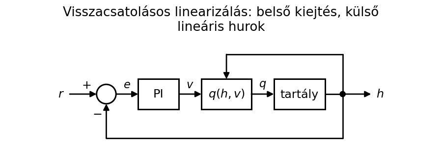
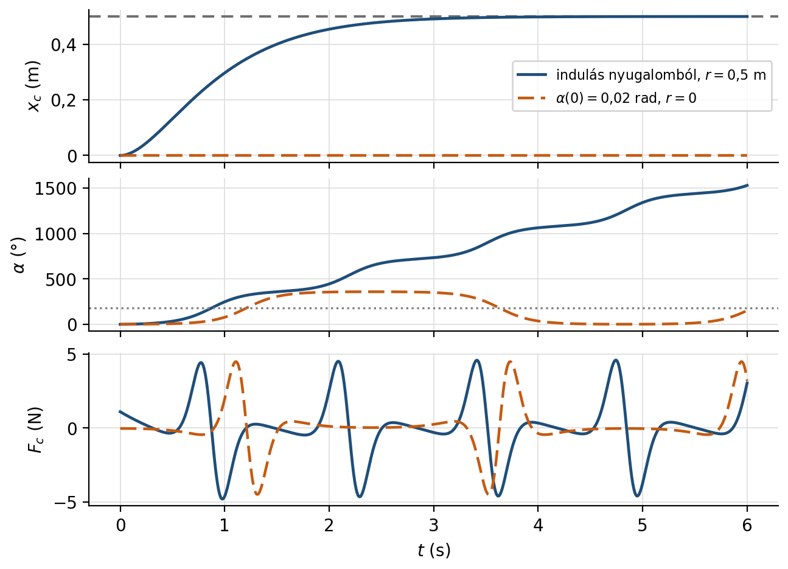

Egy szabad kifolyású tartály szintjét szabályozzuk: a szivattyú
térfogatáramot tölt be, a kifolyás a szint négyzetgyökével arányos. Az
Egyensúlyi pont és linearizálás szerint minden
munkapontban más lineáris modellt kapunk. Ha a PI-szabályozót a
m-es munkapontra tervezzük, és ugyanazt használjuk
cm-nél, a válasz teljesen más lesz: ugyanarra a 2 cm-es ugrásra a
beállási idő
s helyett
s.
Két kézenfekvő ötlet van. Az egyik: a munkaponthoz igazítjuk az
erősítéseket (erősítésütemezés, gain scheduling). A
másik, merészebb: a nemlinearitást a beavatkozó jelben pontosan
kiejtjük, és olyan rendszert kapunk, amely minden munkapontban
ugyanúgy, lineárisan viselkedik. Ez a visszacsatolásos
linearizálás (feedback linearization). Ebben az alfejezetben
megtanuljuk, mikor működik, mi a rejtett veszélye (a zérodinamika), és
mennyire bízhatunk benne modellhiba mellett.
25.3.2 Szemlélet: a bemenet
„előtorzítása”
A tartály modellje (controlkit.nonlinear.Tank,
didaktikai értékek:
m²,
m²,
l/s):
A bemenet a szint deriváltjára közvetlenül hat. Mi lenne, ha a
szivattyútól nem egy
értéket, hanem egy kívánt szintváltozási sebességet
(,
m/s) kérhetnénk? Ehhez csak a képletet kell megfordítani:
Az első tag pótolja a kifolyást (a mért szintből számolva), a második
adja a kívánt változást. A külső szabályozó egy tiszta integrátort lát,
minden szinten ugyanazt. Ezt ábrázolja a vázlat:

Visszacsatolásos linearizálás: belső
kiejtés, külső lineáris hurok - A
ág a modell inverze: a mért szintet használja.
Mielőtt tovább olvasol, tippeld meg: ha a külső PI minden szinten
ugyanazt a
„”
folyamatot látja, milyen lesz a három munkapontban a válaszok
viszonya?
Statikus változat (mint a PDF-ben)
Tartályszint három munkapontban: linearizált PI (a 0,5 m-es
tervezés), ütemezett PI és linearizáló szabályozó külső PI-vel; felül
névleges modell, középen 30%-kal nagyobb valódi kifolyás, alul a
befolyás
25.3.3 A három szabályozó
Mindhárom ugyanazt a névleges zárt köri polinomot célozza:
,
rad/s (reference_tank_design(),
s, feltételes integrálásos antiwinduppal).
Linearizált PI. A
m-es linearizált modell
,
,
.
A PI-vel a karakterisztikus polinom
,
tehát
,
.
Ütemezett PI. Ugyanez, de
-t
az aktuális alapjel szintjén számoljuk újra. A linearizált modellen a
pólusok minden munkapontban
(kettős).
Linearizáló + PI.
,
,
,
.
A zárt kör pontosan lineáris:
.
A névleges modellen mért túllövés és 2%-os beállási idő:
linearizált PI
ütemezett PI
linearizáló + PI
0,05 m
0% / 929 s
0% / 586 s
13,8% / 540 s
0,5 m
1,1% / 215 s
1,0% / 216 s
13,7% / 538 s
1,0 m
5,2% / 470 s
3,5% / 423 s
13,7% / 538 s
Csak a harmadik oszlop független a munkaponttól: ez volt a cél. Miért
nem egyforma az ütemezett PI, ha a pólusai egyformák? Mert a
zérus nem: a PI zérusa
,
amely
m-nél
rad/s (messze van, nincs hatása),
m-nél
rad/s. Az erősítésütemezés a pólusokat egyenlíti ki, a zérusokat csak
akkor, ha azt is külön ütemezzük. A linearizáló törvény ezzel szemben a
nemlineáris
tagot teljesen eltünteti, ezért mind a pólus, mind a zérus azonos. A
-os
túllövés a zérus ára: elméletben
(a mintavétel emeli kicsit), lásd a kézi példát. Ha nem kívánatos, a
külső hurkon alapjel-súlyozást vagy előszűrőt alkalmazunk (Kétszabadságfokú PID: alapjel-súlyozás és
előszűrés).
25.3.4 Relatív fok és
Lie-derivált
Általánosan tekintsük az egy bemenetű, egy kimenetű,
bemenetben affin rendszert:
Deriváljuk a kimenetet, amíg az
meg nem jelenik. A láncszabály szerint
.
A
skalárt a
függvény
szerinti Lie-deriváltjának hívjuk, jele
:
egyszerűen
változási sebessége a
pálya mentén. Ha
,
deriválunk tovább:
,
és így tovább.
Definíció. A rendszer relatív foka
az a legkisebb
,
amelyre az
-edik
deriváltban az
együtthatója nem nulla:
Lineáris átviteli függvénynél a relatív fok a nevező és a számláló
fokszámának különbsége. A linearizáló törvény:
Egy
hosszú integrátorlánc keletkezik, amelyre a
-t
lineáris módszerrel tervezzük (pólusáthelyezés, PD/PID). Feltétel:
a működési tartományban, és minden szükséges állapot mérhető (vagy
becsülhető).
Számított nyomaték (computed torque). Robotkarnál
szerkezetű a modell, ahol
a csuklószögek vektora. A
törvény
-t
ad: a csuklók szétcsatolt kettős integrátorokká válnak. Az egyszerű
ingán
(
az alsó helyzettől,
)
ez
,
a külső hurok pedig pl.
.
25.3.5 Normálalak és
zérodinamika
Ha
(a relatív fok kisebb az állapot dimenziójánál), akkor a kimenet és
deriváltjai
()
csak
koordinátát írnak le. A maradék
koordinátát,
-t
úgy választjuk, hogy az átalakítás egyértelmű legyen. Ez a
normálalak:
A linearizáló törvény csak az
részt teszi lineárissá. Az
belső dinamika a kimenetben nem látszik.
Definíció. A zérodinamika a belső
dinamika akkor, amikor a bemenet a kimenetet azonosan nullán tartja:
.
Lineáris rendszerben a zérodinamika sajátértékei éppen az átviteli
függvény zérusai. Instabil zérodinamika tehát a nem
minimálfázisú rendszer nemlineáris megfelelője (Holtidő és nem minimálfázisú rendszerek). Ilyenkor
a kimenet szépen követi az alapjelet, miközben a belső állapot elszáll:
a pontos linearizálás nem alkalmazható.
Példa a kocsis ingán (Állapotváltozós alak és a
futó példák modelljei). Legyen a kimenet a kocsi helyzete,
.
Ekkor
:
az erő azonnal gyorsulást okoz, és az
erőt választhatjuk úgy, hogy
legyen (cart_force_for_acceleration). A maradék két állapot
az inga:
A zérodinamika
():
.
A felső helyzet körüli linearizáltjának sajátértékei
(instabil!), az alsóé
(csillapítatlan lengés).

A kocsi helyzetének pontos linearizálása: a kocsi
tökéletesen követi a tervet, az inga pedig elesik és forog
A kocsi pontosan a
által előírt pályán halad, az inga viszont átfordul és forog. A
szabályozó „sikeres” a saját kimenetén, a rendszer mégsem működik. A
megoldás: másik kimenet (ahol nincs zérodinamika, lásd a 7. feladatot),
vagy teljes állapot-visszacsatolás (2. záróprojekt:
fordított inga a kocsin).
25.3.6 Robusztusság: modellhiba és
telítés
A kiejtés annyira pontos, amennyire a modell. Ha a valódi kifolyás
,
a modellbeli
:
A maradék tag zavar és nemlineáris visszacsatolás egyszerre.
Zavarként az integráló hatás elnyeli: nélküle
()
mellett az
m alapjelnél a szint
m-en állna meg,
cm hibával. Visszacsatolásként a derivált előjele számít: ha a valódi
kifolyás nagyobb a modellbelinél, a maradék pótlólagos csillapítás; ha
kisebb, negatív csillapítás (pozitív visszacsatolás),
és a túllövés nő.
mellett a linearizáló szabályozó túllövése
m-nél
(a névleges
helyett),
m-nél
.
A hatás kis szintnél a legnagyobb, mert
deriváltja ott meredek.
-kal
nagyobb kifolyásnál a mutatók (túllövés / beállási idő):
/226
s,
/497
s,
/515
s a három szinten.
A telítés a másik korlát: a
csak
és
között lehet. Telítésben a kiejtés nem jön létre, a külső hurok nem a
feltételezett integrátort látja, ezért az antiwindup itt is kötelező (Integrátortelítés és antiwindup). Van fizikai
határ is:
-kal
nagyobb kifolyás mellett
m tartásához
l/s kellene, ami több, mint
.
Ezt semmilyen szabályozó nem oldja meg.
Gyakorlati recept: a linearizáló törvény belül, kívül egy
robusztus lineáris hurok integrálóval, elég nagy
tartalékokkal; a modellparamétereket identifikáljuk; a
tartományt (ahol az
hatástalan) kerüljük. Ha a modell nagyon bizonytalan, a következő
alfejezet csúszómódja jobb választás.
25.3.6.1 Összevetés más
módszerekkel
Erősítésütemezés: a lineáris tervek egy családja;
egyszerű, a meglévő PID-eszközökkel működik, de csak lassan változó
munkapontra garantál valamit, gyors átmenetekre nem.
Modellinverz előrecsatolás (Előrecsatolás és kaszkádszabályozás): az
alapjelből számolja a bemenetet
(),
a visszacsatolás csak a hibát javítja. A zérodinamika veszélye kisebb,
mert a hibás modell nem kerül a visszacsatoló hurokba, de a hurok
dinamikája munkapontfüggő marad.
Visszacsatolásos linearizálás: a
mért állapotból ejt ki; egységes dinamikát ad nagy
ugrásoknál is, cserébe érzékeny a modellre, a zajra és a
zérodinamikára.
25.3.7 Kézi számpélda
A
m-es szinten,
m hibánál, nulla integrátorállapottal.
Linearizáló:
m/s. A kifolyás
m³/s. Tehát
m³/s
(
l/s).
Linearizált PI (a
m-es tervvel
m²/s):
m³/s. A két érték közel van, de a lineáris terv a
m-es dinamikához rosszul illeszkedő integrálást használ, ezért a
kúszás.
A linearizált zárt kör ugrásválasza. Egységnyi
lépésre
vagyis
.
A derivált nulla, ha
;
ott
.
A beállási időre
,
,
tehát
s – pontosan a táblázat értéke.
25.3.8 Kód
from controlkit import nonlinear as nl, simfor h0 in (0.05, 0.5, 1.0): sor = [f"h0 = {h0:4.2f} m:"]for m in ("linear", "gs", "fl"): t, h, q = nl.simulate_tank(m, h0 +0.02, h0, 3000.0) i = sim.step_info(t, h, y0=h0, final=h0 +0.02) sor.append(f"{m}{i.overshoot:4.1f}% {i.settling_time:4.0f} s")print(" | ".join(sor))hibas = nl.Tank(a_o=0.7e-4) # a valódi kifolyás 30%-kal kisebbt, h, q = nl.simulate_tank("fl", 0.07, 0.05, 3000.0, tank=hibas)print(f"fl, hibás modell: túllövés {sim.step_info(t, h, y0=0.05, final=0.07).overshoot:.1f}%")
h0 = 0.05 m: | linear 0.0% 929 s | gs 0.0% 586 s | fl 13.8% 540 s
h0 = 0.50 m: | linear 1.1% 215 s | gs 1.0% 216 s | fl 13.7% 538 s
h0 = 1.00 m: | linear 5.2% 470 s | gs 3.5% 423 s | fl 13.7% 538 s
fl, hibás modell: túllövés 37.9%
A relatív fok szimbolikusan ellenőrizhető
(relative_degree, SymPy). Az ingán
,
a lineáris
rendszeren
:
Kattints a
„”,
majd a
„”
gombra. A linearizáló szabályozó mutatói szinte változatlanok
(,
s), a linearizált PI-é
-ről
s-ra ugrik. Kapcsold ki az ütemezett PI-t, ha zsúfolt az ábra.
A
helyen állítsd a
arányt
-re:
a linearizáló görbe túllövése erősen megnő. Magyarázd meg a maradék tag
előjelével. Mi történik
-nál?
„Nagy lépés”:
m. Mindhárom szabályozó telít (a
eléri
-ot),
ilyenkor a különbségek elmosódnak. Meddig látod a telítést?
Állítsd a munkapontot
m-re és az arányt
-re:
egyik szabályozó sem éri el az alapjelet. Olvasd el a figyelmeztetést:
miért?
25.3.10 Tipikus hibák
A zérodinamika vizsgálatának kihagyása. Tünet: a
kimenet tökéletes, a beavatkozó jel vagy egy belső állapot elszáll. Ok:
instabil zérodinamika. Javítás: relatív fok és
ellenőrzése, más kimenet vagy teljes állapot-visszacsatolás.
Integráló nélküli külső hurok. Tünet: maradó hiba,
amely a modellhibával nő. Ok: a kiejtés maradéka állandó zavarként hat.
Javítás: integráló hatás a
-ben.
A telítés figyelmen kívül hagyása. Tünet: nagy
lépésnél túllövés vagy windup. Ok: telítésben a linearizálás megszűnik.
Javítás: antiwindup a külső hurkon, vagy szűrt, fizikailag teljesíthető
alapjelpálya.
Alapjelből és mért jelből való kiejtés
összekeverése. Ha az alapjelből számolsz
(),
az előrecsatolás, és nem linearizálja a hurkot. Javítás: a kiejtéshez a
mért (szűrt) állapotot használd.
A „zajos” mérés közvetlen behelyettesítése. A
a zajt is átadja a beavatkozó jelnek, főleg ha deriválni kell. Javítás:
megfigyelő vagy szűrő, és a zaj hatásának szimulációja.
25.3.11 Önellenőrzés
Mit ejt ki a
törvény, és mit lát utána a külső szabályozó?
Mit jelent a relatív fok?
Mi a zérodinamika, és miért veszélyes, ha instabil?
Mi a különbség az erősítésütemezés és a visszacsatolásos
linearizálás között?
Miért nem érvényes a linearizálás telítésben?
25.3.12 Feladatok
(A) Számold ki a
m-es linearizált modellt, az ütemezett PI erősítéseit, és a linearizáló
törvény
értékét
m-nél (nulla integrátor).
(A) Az
,
,
rendszer relatív foka mekkora? Add meg a linearizáló törvényt.
(B) Vizsgáld meg az
,
rendszer zérodinamikáját
-re.
Mi változik, ha a második egyenlet
?
(B) Az inga számított nyomatékos szabályozásánál a
modell a gravitációt
-kal
alábecsli
(
pontos),
,
rad. Hol áll meg az inga?
(B) Vezesd le, miért
cm a maradó hiba integráló nélkül a fenti
esetben.
(C, programozós) Mérd meg a linearizáló szabályozó
túllövését
és
mellett
m-nél, és magyarázd meg a mintázatot.
(C) A kocsis inga felső helyzet körüli linearizált
modelljében
.
Mutasd meg, hogy a
kimenet relatív foka
,
tehát nincs zérodinamikája.
25.3.13 Rövid összefoglaló
A visszacsatolásos linearizálás a mért állapotból számolt bemenettel
ejti ki a nemlinearitást:
esetén
integrátorláncot ad, amelyet lineáris módszerrel szabályozunk. A
tartálynál ez minden munkapontban azonos választ ad, míg a linearizált
PI beállási ideje
és
s között változik; az erősítésütemezés a pólusokat egyenlíti ki, a
zérust nem. Ha a relatív fok kisebb az állapot dimenziójánál, a
zérodinamikát meg kell vizsgálni: instabil zérodinamikánál
(kocsihelyzet-linearizálás) a módszer nem használható. Modellhiba és
telítés ellen integráló hatás, antiwindup és robusztus külső hurok
kell.
25.3.14 Megoldások
1/s
(
s),
1/m².
m²/s,
m²/s². A linearizáló törvény:
m³/s.
(
nem jelenik meg),
:
,
nincs belső dinamika.
.
esetén
,
tehát
,
és
:
a
körül
,
instabil (a
egyensúlyokhoz tart). Az
esetben
:
instabil és korlátlan. Mindkettő nem minimálfázisú. (Ha
lenne,
globálisan stabil.)
Egyensúlyban
:
,
azaz
.
m-nél a két oldal egyenlő
(),
a hiba
cm. A
növelésével csökken, de nem tűnik el.
nl.simulate_tank("fl", h0 + 0.02, h0, 3000, tank=nl.Tank(a_o=...))
és sim.step_info.
:
.
:
.
A maradék tag deriváltja
:
pozitív, ha a valódi kifolyás kisebb (destabilizáló irány), negatív, ha
nagyobb (csillapít); nagysága
szerint csökken.
,
tehát
nem szerepel.
,
,
és az
-ben
már benne van az erő.
:
nincs belső dinamika. A pont
m-re van a forgásponttól (a lengésközéppont).
25.3.14.1 Válaszok az önellenőrző
kérdésekre
A kifolyás nemlineáris tagját; a külső hurok a
integrátort látja.
Hányszor kell deriválni a kimenetet, hogy a bemenet
megjelenjen.
A belső dinamika azonosan nulla kimenet mellett; instabil esetben a
belső állapot elszáll, miközben a kimenet rendben látszik.
Az ütemezés lineáris tervek családja munkapontonként; a linearizálás
egzakt algebrai kiejtés, amely nagy tartományban egységes dinamikát ad,
de modellérzékeny.
Mert a kiszámolt bemenetet nem lehet kiadni, így a nemlineáris tag
nem ejtődik ki.